Experiments: 2x2 designs and regression adjustment
Source:vignettes/experiments.Rmd
experiments.RmdAnalying 2x2 Experiments with marginaleffects
A 2×2 factorial design is a type of experimental design that allows researchers to understand the effects of two independent variables (each with two levels) on a single dependent variable. The design is popular among academic researchers as well as in industry when running A/B tests.
To illustrate how to analyze these designs with
marginaleffects, we will use the mtcars
dataset. We’ll analyze fuel efficiency, mpg (miles per
gallon), as a function of am (transmission type) and
vs (engine shape).
vs is an indicator variable for if the car has a
straight engine (1 = straight engine, 0 = V-shaped). am is
an indicator variable for if the car has manual transmission (1 = manual
transmission, 0=automatic transmission). There are then four types of
cars (1 type for each of the four combinations of binary
indicators).
Fitting a Model
Let’s start by creating a model for fuel efficiency. For simplicity,
we’ll use linear regression and model the interaction between
vs and am.
library(tidyverse)
library(marginaleffects)
# See ?mtcars for variable definitions
fit <- lm(mpg ~ vs + am + vs:am, data=mtcars) # equivalent to ~ vs*amWe can plot the predictions from the model using the
plot_predictions function. From the plot below, we can see
a few things:
- Straight engines (
vs=1) are estimated to have better expected fuel efficiency than V-shaped engines (vs=0). - Manual transmissions (
am=1) are estimated to have better fuel efficiency for both V-shaped and straight engines. - For straight engines, the effect of manual transmissions on fuel efficiency seems to increase.
plot_predictions(fit, by = c("vs", "am"))
Evaluating Effects From The Model Summary
Since this model is fairly simple the estimated differences between
any of the four possible combinations of vs and
am can be read from summary(fit) with a little
arithmetic. The estimated model is
\[ \mbox{mpg} = 20.743 + 5.693 \cdot \mbox{vs} + 4.700 \cdot \mbox{am} + 2.929 \cdot \mbox{vs} \cdot \mbox{am} \>. \]
The estimated differences in fuel efficiency are:
- 5.693 mpg between straight engines and V-shaped engines when the car has automatic transmission.
- 4.700 mpg between manual transmissions and automatic transmissions when the car has a V-shaped engine.
- 7.629 mpg between manual transmissions and automatic transmissions when the car has a straight engine.
- 13.322 mpg between manual transmissions with straight engines and automatic transmissions with V-shaped engines.
Reading off these differences from the model summary becomes more
difficult as more variables are added (not to mention obtaining their
estimated standard errors becomes nightmarish). To make the process
easier on ourselves, we can leverage the avg_comparisons
function to get the same estimates and their uncertainty.
Using avg_comparisons To Estimate All Differences
Note that the dot in the grey rectangle is the estimated fuel
efficiency when vs=0 and am=0 (that is, for an
automatic transmission car with V-shaped engine).

Let’s use avg_comparisons to get the difference between
straight engines and V-shaped engines when the car has automatic
transmission. The call to avg_comparisons is shown below
and results in the same estimate we made directly from the model. The
contrast corresponding to this estimate is shown in the plot below.
avg_comparisons(fit,
newdata = datagrid(am = 0),
variables = "vs")
#>
#> Term Contrast Estimate Std. Error z Pr(>|z|) 2.5 % 97.5 %
#> vs 1 - 0 5.69 1.65 3.45 <0.001 2.46 8.93
#>
#> Columns: rowid, term, contrast, estimate, std.error, statistic, p.value, conf.low, conf.high, predicted, predicted_hi, predicted_loThe next difference is between manual transmissions and automatic
transmissions when the car has a V-shaped engine. Again, the call to
avg_comparisons is shown below, and the corresponding
contrast is indicated in the plot below using an arrow.
avg_comparisons(fit,
newdata = datagrid(vs = 0),
variables = "am")
#>
#> Term Contrast Estimate Std. Error z Pr(>|z|) 2.5 % 97.5 %
#> am 1 - 0 4.7 1.74 2.71 0.00678 1.3 8.1
#>
#> Columns: rowid, term, contrast, estimate, std.error, statistic, p.value, conf.low, conf.high, predicted, predicted_hi, predicted_lo
The third difference we estimated was between manual transmissions and automatic transmissions when the car has a straight engine. The model call and contrast are
avg_comparisons(fit,
newdata = datagrid(vs = 1),
variables = "am")
#>
#> Term Contrast Estimate Std. Error z Pr(>|z|) 2.5 % 97.5 %
#> am 1 - 0 7.63 1.86 4.11 <0.001 3.99 11.3
#>
#> Columns: rowid, term, contrast, estimate, std.error, statistic, p.value, conf.low, conf.high, predicted, predicted_hi, predicted_lo
And the last difference and contrast between manual transmissions with straight engines and automatic transmissions with V-shaped engines is
avg_comparisons(fit,
newdata = datagrid("vs", "am"),
variables = c("am", "vs"),
cross = TRUE)
#>
#> C: am C: vs Estimate Std. Error z Pr(>|z|) 2.5 % 97.5 %
#> 1 - 0 1 - 0 13.3 1.65 8.07 <0.001 10.1 16.6
#>
#> Columns: rowid, term, contrast_am, contrast_vs, estimate, std.error, statistic, p.value, conf.low, conf.high, predicted, predicted_hi, predicted_loConclusion
The 2x2 design is a very popular design, and when using a linear
model, the estimated differences between groups can be directly read off
from the model summary, if not with a little arithmetic. However, when
using models with a non-identity link function, or when seeking to
obtain the standard errors for estimated differences, things become
considerably more difficult. This vignette showed how to use
avg_comparisons to specify contrasts of interests and
obtain standard errors for those differences. The approach used applies
to all generalized linear models and effects can be further stratified
using the by argument (although this is not shown in this
vignette.)
Regression adjustment in experiments
Many analysts who conduct and analyze experiments wish to use regression adjustment with a linear regression model to improve the precision of their estimate of the treatment effect. Unfortunately, regression adjustment can introduce small-sample bias and other undesirable properties (Freedman 2008). Lin (2013) proposes a simple strategy to fix these problems in sufficiently large samples:
- Center all predictors by subtracting each of their means.
- Estimate a linear model in which the treatment is interacted with each of the covariates.
The estimatr package includes a convenient function to
implement this strategy:
library(estimatr)
library(marginaleffects)
lalonde <- read.csv("https://vincentarelbundock.github.io/Rdatasets/csv/MatchIt/lalonde.csv")
mod <- lm_lin(
re78 ~ treat,
covariates = ~ age + educ + race,
data = lalonde,
se_type = "HC3")
summary(mod)
#>
#> Call:
#> lm_lin(formula = re78 ~ treat, covariates = ~age + educ + race,
#> data = lalonde, se_type = "HC3")
#>
#> Standard error type: HC3
#>
#> Coefficients:
#> Estimate Std. Error t value Pr(>|t|) CI Lower CI Upper DF
#> (Intercept) 6488.05 356.71 18.1885 2.809e-59 5787.50 7188.6 604
#> treat 489.73 878.52 0.5574 5.774e-01 -1235.59 2215.0 604
#> age_c 85.88 35.42 2.4248 1.561e-02 16.32 155.4 604
#> educ_c 464.04 131.51 3.5286 4.495e-04 205.77 722.3 604
#> racehispan_c 2775.47 1155.40 2.4022 1.660e-02 506.38 5044.6 604
#> racewhite_c 2291.67 793.30 2.8888 4.006e-03 733.71 3849.6 604
#> treat:age_c 17.23 76.37 0.2256 8.216e-01 -132.75 167.2 604
#> treat:educ_c 226.71 308.43 0.7350 4.626e-01 -379.02 832.4 604
#> treat:racehispan_c -1057.84 2652.42 -0.3988 6.902e-01 -6266.92 4151.2 604
#> treat:racewhite_c -1205.68 1805.21 -0.6679 5.045e-01 -4750.92 2339.6 604
#>
#> Multiple R-squared: 0.05722 , Adjusted R-squared: 0.04317
#> F-statistic: 4.238 on 9 and 604 DF, p-value: 2.424e-05We can obtain the same results by fitting a model with the standard
lm function and using the comparisons()
function:
mod <- lm(re78 ~ treat * (age + educ + race), data = lalonde)
avg_comparisons(
mod,
variables = "treat",
vcov = "HC3")
#>
#> Term Contrast Estimate Std. Error z Pr(>|z|) 2.5 % 97.5 %
#> treat 1 - 0 490 879 0.557 0.577 -1232 2212
#>
#> Columns: term, contrast, estimate, std.error, statistic, p.value, conf.low, conf.highNotice that the treat coefficient and associate standard
error in the lm_lin regression are exactly the same as the
estimates produced by the comparisons() function.
References
- Freedman, David A. “On Regression Adjustments to Experimental Data.” Advances in Applied Mathematics 40, no. 2 (February 2008): 180–93.
- Lin, Winston. “Agnostic Notes on Regression Adjustments to Experimental Data: Reexamining Freedman’s Critique.” Annals of Applied Statistics 7, no. 1 (March 2013): 295–318. https://doi.org/10.1214/12-AOAS583.